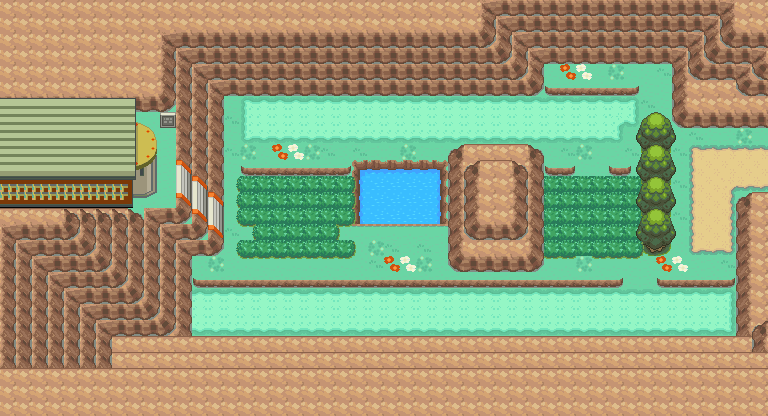

未定｜22号公路；满金市；烧焦塔
单打 ｜ 队伍 4 只 ｜ 22号公路；满金市；烧焦塔
概况
- 名称：未定
- 对战形式：单打
- 队伍规模：4 只
- 实际地区／场景：22号公路；满金市；烧焦塔
- 训练家道具：无
- 同名记录（不合并）：0329 未定、0331 未定、0332 未定、0333 未定、0334 未定、0426 未定、0427 未定、0428 未定、0429 未定、0430 未定、0431 未定、0432 未定、0433 未定、0434 未定、0435 未定、0436 未定、0437 未定、0438 未定、0439 未定、0440 未定、0739 未定、0740 未定、0741 未定
队伍
等级为该记录内的基础队伍等级。
| # | 宝可梦 | 等级 | 携带 | 招式 |
|---|---|---|---|---|
| 1 | 鬼斯 | 22 | 先制之爪 | 催眠术（超能） ／ 黑色目光（一般） ／ 黑色目光（一般） ／ 诅咒（幽灵） |
| 2 | 超音蝠 | 22 | 橙橙果 | 超音波（一般） ／ 空气利刃（飞行） ／ 剧毒牙（毒） ／ 咬住（恶） |
| 3 | 小磁怪 | 20 | 磁铁 | 电磁波（电） ／ 电球（电） ／ 超音波（一般） ／ 金属音（钢） |
| 4 | 火岩鼠 | 24 | 木炭 | 高速星星（一般） ／ 蓄能焰袭（火） ／ 烟幕（一般） ／ 电光一闪（一般） |
性格 · 努力值 · 个体值
- 鬼斯：性格 固执（Adamant）；个体值 31；努力值 HP6 / 攻击252 / 速度252；特性：随机第1/第2特性（Random 1&2）。
- 超音蝠：性格 固执（Adamant）；个体值 31；努力值 HP6 / 攻击252 / 速度252；特性：随机第1/第2特性（Random 1&2）。
- 小磁怪：性格 固执（Adamant）；个体值 31；努力值 HP6 / 攻击252 / 速度252；特性：随机第1/第2特性（Random 1&2）。
- 火岩鼠：性格 固执（Adamant）；个体值 31；努力值 HP6 / 攻击252 / 速度252；特性：随机第1/第2特性（Random 1&2）。
已知特殊规则
该记录无已确认的特殊规则。
同名提示：本页规则只属于编号 330，不套用到其它同名记录。
溯源：wiki_export/world/data/trainers.json 指针 /trainers/330；地区名来自 wiki_export/world/data/maps.json；道具名来自 wiki_export/core/data/items.json；特殊规则文字依据 trainers_research/README.md。稳定编号 0330。
正文不展示 ROM 地址与原始字节。
地点地图
共享RGB底图；点击可缩放定位。数字对应本页相关地点，不代表地图上全部事件。
22号公路

地图范围记录：当前资料没有精确人物／遭遇坐标。
满金市·港湾区

地图范围记录：当前资料没有精确人物／遭遇坐标。
烧焦塔

地图范围记录：当前资料没有精确人物／遭遇坐标。 底图有7个图块缺少原始数据。